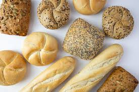
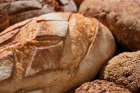
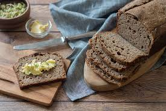
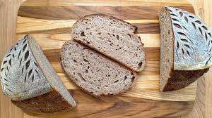
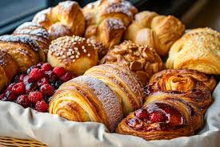
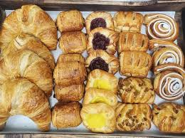

Welcome to The Daily Loaf
Welcome to The Daily Loaf Bakery, where every loaf tells a story and every bite feels like home. We are a family-owned bakery that first opened our doors in 2015, and since then, we have been dedicated to serving our community with the freshest, most delicious breads and pastries made from scratch every single day.
At The Daily Loaf, we believe that great bread starts with great ingredients. That is why we work closely with local farmers and suppliers to source the finest flour, butter, eggs, and other natural ingredients. We never use preservatives or artificial flavours — just honest, wholesome baking the way it used to be done.
Our team arrives early every morning, long before the sun rises, to mix, knead, and shape our doughs by hand. From our famous sourdough, which has been fermenting with the same starter for over five years, to our flaky butter croissants and our soft, sweet celebration cakes — everything we make is crafted with patience, passion, and pride.
Whether you are stopping by for a loaf of our hearty rye bread, treating yourself to a blueberry muffin with your morning coffee, or planning a party and need a show-stopping cake — we are here for you. Come visit us at our Main Bakery or find us at the Neighbourhood Farmers Market on weekends.
Thank you for supporting local, family-owned businesses. We cannot wait to serve you something warm and wonderful.



Yeast Breads
Bagutte, ciabatta, and ezekiel breads.



Artisan Breads
Sourdough, rye, and wholewheat.



Butter Pastries
Croissants, danishes, and muffins.
Custom Cakes
Birthday and celebration cakes.